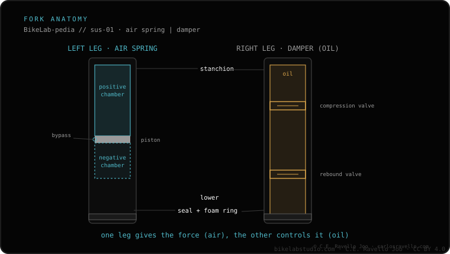

Losing air between rides usually comes from the air spring seal (the air-side leg) or the valve. Check in order: reseat and tighten the valve core, and check the pump connection — losing a few psi when you remove the pump is normal. Persistent loss, with the valve ruled out, points to an air spring service (new seals). Don't confuse it with sagging down: that's a different thing. If you're unsure of your pressure, see pressure by weight; and if it also feels harsh, check the feel first.
Before talking about a service, rule out the cheap stuff: the valve and the pump itself fool people more than you'd think.

Tell us the fork model, how much the pressure drops and over how long, and we'll point you to whether it's the valve or a service. Message us on WhatsApp
Usually the air spring seal (air-side leg) or the valve core. Start by reseating the valve core and checking the pump.
Yes, that's the air in the pump and its hose. What matters is whether it loses air between rides with the pump already off.
No. Losing air is the air spring pressure dropping at rest; sagging down is a different thing, diagnosed separately.
© 2026 BikeLab Studio. Content under CC BY 4.0: you may copy, translate and publish it, even for commercial purposes. Citation is mandatory. Without attribution, the license terminates automatically (CC BY 4.0, §6.a) and the use becomes copyright infringement: we request the removal of the content and its deindexing. · Design and ownership: Carlos Ravello Joo